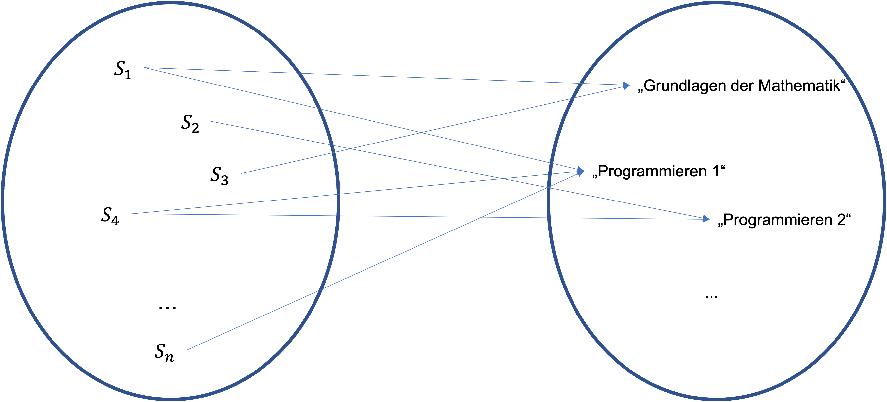
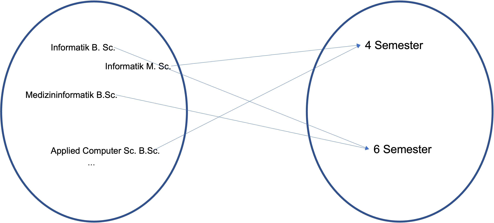
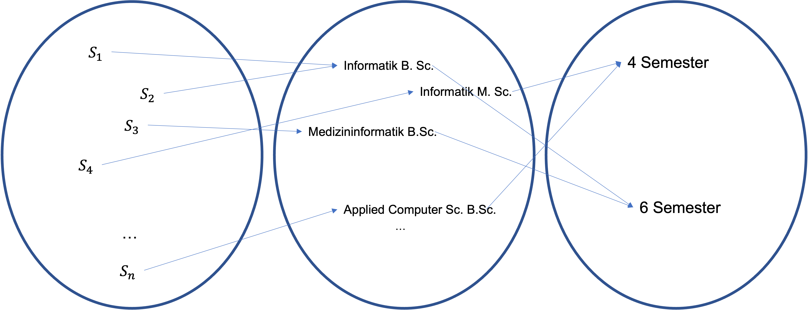
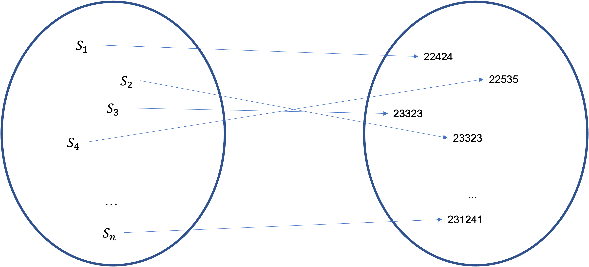
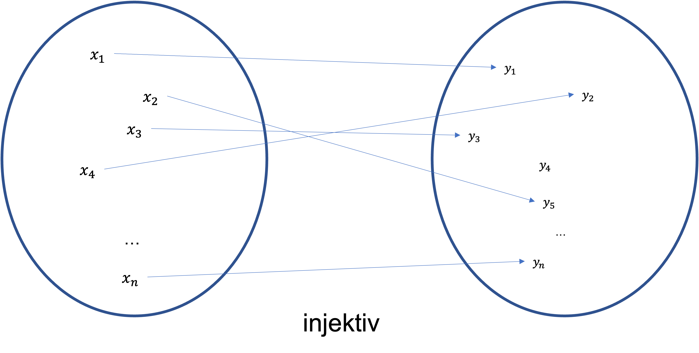
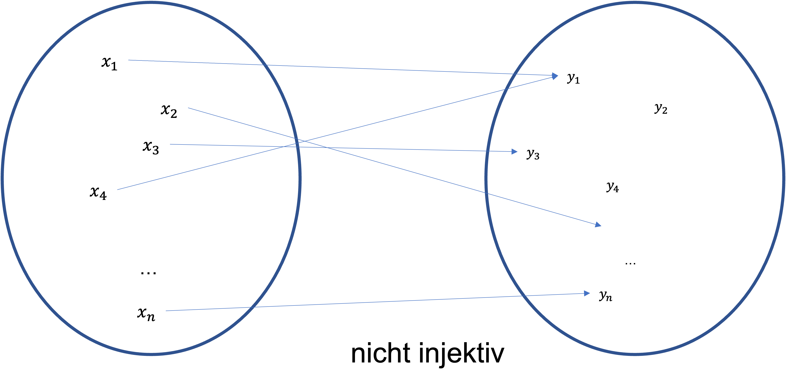
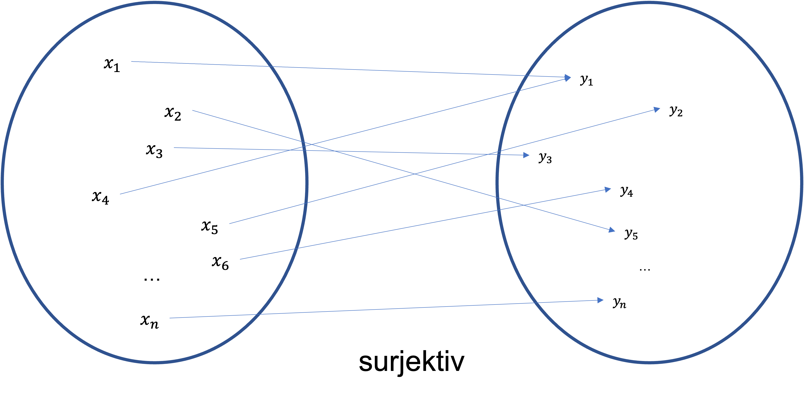
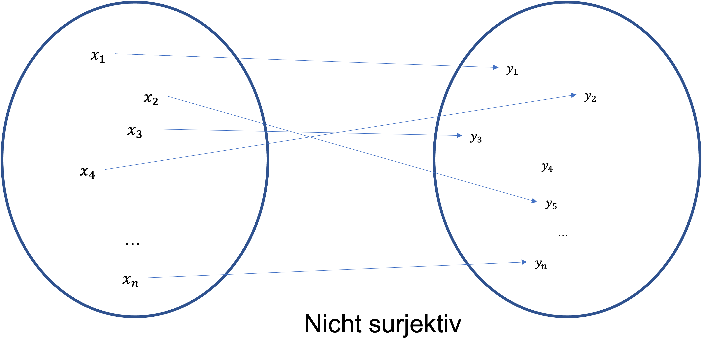

Kapitel 3 - Relationen und Funktionen#
Funktionen kennen Sie wohl alle noch aus der Schule. Dort haben Sie vermutlich die quadratische Funktion, die Logarithmusfunktion, Sinus und Cosinus sowie die Exponentialfunktion kennengelernt. Doch was sind Relationen?
Tatsächlich sind Relationen, das allgemeinere Konzept. Am anschaulichsten wird dies im Bereich der Datenspeicherung offenbar. Sie haben vielleicht schon einmal etwas von relationalen Datenbanken gehört.
Diese bedienen sich genau aus dem Konzept der Relationen.
Eine relationale Datenbank ist eine Sammlung von Relationen. Relationen selber kann man sich als eine Tabelle vorstellen
Name |
Geburtstag |
Wohnort |
Matrikelnr |
|---|---|---|---|
Karl Hecht |
01.05.2000 |
Berlin |
223323 |
Claudia Pech |
04.02.1999 |
Brandenburg |
223954 |
… |
… |
… |
… |
… |
… |
… |
… |
Wie wir dieses Konzept formalisieren lernen wir in den nächsten Kapiteln.
Nachdem wir uns intensiv mit dem Begriff der Relationen auseinandergesetzt haben, werden wir dann den spezielleren Begriff der Funktion einführen und wichtige Eigenschaften von Funktionen wie die bijektivität kennenlernen.
3.1 Lernziele#
In diesem Abschnitt lernen wir die folgenden Dinge:
Definition einer Relation
Wichtige Eigenschaften binärer Relationen
Darstellung von binären Relationen
Definition einer (totalen) Ordnung
Definition einer Funktion
Definition von von injektiv, surjektiv, bijektiv
Lernziele
Studierende können eigene Relationen bilden und entscheiden, ob es sich bei gegebenen Mengen um Relationen handelt.
Studierende können binäre Relationen graphisch darstellen.
Studierende können sicher mit eigenschaften von binären Relationen umgehen und entscheiden, ob gegebene Relationen gewisse Eigenschaften besitzen.
Studierende können Ordnungen als binäre Relation auffassen und zu einer gegebenen Relationen entscheiden, ob es sich um eine Ordnung handelt.
Studierende verstehen die Definition und die Schreibweise für eine Funktion und können diese auch als Relation interpretieren.
Studierende können entscheiden, ob gegebene Funktionen injektiv, surjektiv oder bijektiv sind.
3.2 Relationen#
In diesem Kapitel werden wir den Begriff der Relation mathematisch exakt definieren und diesen veranschaulichen mit Hilfe von Tabellen. Im zweiten Teil betrachten wir insbesondere binäre Relationen und einig wichtige Spezialfälle von binären Relationen.
3.2.1 Allgemeine Relationen#
Wir haben in der Einleitung schon versucht die Relation als eine Tabelle zu motivieren. In einer Tabelle besteht die erste Zeile meistens aus den Kategorien die wir betrachten. In unserem Beispiel Name, Geburtstag, Wohnort und Matrikelnr. Kategorien interpretieren wir als Mengen wobei die Kategorie der Namen, die Menge aller Namen,die Potentiell auftreten können ist (z.B. ein Auszug aller Meldeämter). Die Menge der Matrikelnr. enthält alle validen Kombinationen aus Zahlen, die eine Matrikelnr. bilden und so weiter.
Sagen wir also wir haben unsere Kategorien in Mengen \(A_1,\dots, A_n\) übersetzt.
Was ist nun eine Zeile in dieser Tabelle? Nun es ist eine Liste von Werten
(Karl Hecht, 01.05.2000 ,Berlin, 223323)
Wie können wir das interpretieren? Wir können sagen, dass dieses Tupel ein Element des Kartesischen Produkts \(A_1\times\dots \times A_n\) ist.
Damit ergibt sich die Formale Definition einer Relation wie folgt
Definition 20
Seien \(A_1,\dots, A_n\) Mengen. Eine \(n\)-stellige Relation \(R\) ist definiert als eine Teilmenge
Sind alle \(A_i\) identisch so heißt \(R\) auch homogen, ansonsten heterogen. Für eine \(n\)-stellige homogene Relation \(R\subset A\times\dots\times A\) heißt \(A\) auch die Grundmenge.
Example 23
Sei \(A_1=\left\{0,1\right\}, A_2=\left\{0,1,2\right\},A_3=\left\{0,1,2,3\right\}\).
Dann sind folgende Mengen 3-stellige Relationen:
\(R_1=\left\{(0,1,2),(1,2,3)\right\}\subset A_1\times A_2 \times A_3\)
\(R_2=\left\{ (x,y,z)\in A_1\times A_2 \times A_3 \ \vert \ x+y+z=3\right\}\subset A_1\times A_2 \times A_3\)
\(R_3=\left\{ (x,y,z)\in A_1\times A_2 \times A_3 \ \vert \ x=0\right\}\subset A_1\times A_2 \times A_3\)
Aufgabe
Geben Sie \(R_2\) und \(R_3\) in aufzählender Form an!
3.2.2 Binäre Relationen#
Der Fall \(n=2\) ist ein wichtiger Spezialfall. Deshalb verdient er eine eigene Definition.
Definition 21
Eine zweistellige Relation \(R\subset A_1\times A_2\) nennen wir auch binäre Relation. Falls \((a_1,a_2)\in R\) so schreiben wir auch \(a_1Ra_2\).
Example 24
Wir definieren eine Relation \(R\subset \mathbb{R}\times \mathbb{R}\) wie folgt:
Wir nennen diese Relation auch die kleiner Relation und schreiben \(x<y\) falls \(xRy\).
Example 25
Wir definieren eine weitere Relation \(R\subset \mathbb{R}\times \mathbb{R}\) wie folgt:
Wir nennen diese Relation auch die gleich Relation und schreiben \(x=y\) falls \(xRy\).
Wir kennen Relationen also schon ohne es zu wissen. Die Zeichen \(=,\not =, < ,\leq,>,\geq\) sind alle binäre Relationen mit der Grundmenge \(\mathbb{R}\).
Darstellung binärer Relationen#
Binäre Relationen lassen sich im Falle von endlichen Mengen \(A_1\) und \(A_2\) kompakt darstellen. Dabei gibt es zwei Möglichkeiten der Darstellung, die wir im Folgenden näher betrachten wollen:
Pfeildarstellung
Matrixdarstellung
Hierfür betrachten wir folgendes Beispiel. Sei \(A\) die Menge der Studierenden der THB
\(A_1=\left\{S_1,\dots, S_n\right\}\)
Sei Weiterhin \(A_2\) die Menge der Vorlesungen, die an der THB angeboten werden.
\(A_2=\left\{ \text{"Grundlagen der Mathematik", "Programmieren 1", "Programmieren 2", ... } \right\}\)
Wir wollen nun die Relation “Vorlesungsbelegung SoSE23” beschreiben, welche ausdrückt welche Studierenden im SoSE23 welche Vorlesung belegt.
Pfeildarstellung

Die Pfeildarstellung ist fast selbsterklärend. Wir sehen anhand der Darstellung, dass Student:in \(S_1\) die Fächer “Grundlagen der Mathematik” und “Programmieren 1” belegt hat. Hingegen belegt Student:in \(S_4\) die Fächer “Programmieren 1” und “Programmieren 2” gleichzeitig.
Matrixdarstellung
\(S_1\) |
\(S_2\) |
\(S_3\) |
\(S_4\) |
\(\dots\) |
\(S_n\) |
|
|---|---|---|---|---|---|---|
“Grundlagen der Mathematik” |
x |
x |
||||
“Programmieren 1” |
x |
x |
x |
x |
||
“Programmieren 2” |
x |
|||||
\(\vdots\) |
Die Matrixdarstellung ist eine Tabellarische Darstellung bei der wir an jeder Spalten-Zeilen Kombination ein x schreiben falls, die Kombination in der Relation enthalten ist.
Eigenschaften binärer Relationen#
Es gibt viele definierende Eigenschaften von Relationen, die wir hier kurz zusammenfassen wollen. Im folgenden Sei \(R\) immer eine homogene binäre Relation.
Reflexiv#
Definition 22
Sei \(R\) eine homogene binäre Relation mit Grundmenge \(A\). Dann nennen wir \(R\) reflexiv falls
In der Sprache der Prädikatenlogik können wir schreiben:
Reflexivität bedeutet also, dass \(x\) mit sich selbst in Beziehung stehen muss für alle \(x\in A\).
Frage
Welche der Relationen \(=,\not =, < ,\leq,>,\geq\) sind reflexiv?
Antwort
Die Relationen \(=,\leq,\geq\).
Symmetrisch#
Definition 23
Sei \(R\) eine homogene binäre Relation mit Grundmenge \(A\). Dann nennen wir \(R\) symmetrisch falls für alle \(x,y\in A\) mit \(xRy\) auch gilt \(yRx\).
In der Sprache der Prädikatenlogik können wir schreiben:
Symmetrie bedeutet also, dass die Relation keine Reihenfolge kennt. Wir können die Reihenfolge von \(x\) und \(y\) beliebig tauschen.
Frage
Welche der Relationen \(=,\not =, < ,\leq,>,\geq\) sind symmetrisch?
Antwort
Die Relationen \(=\) und \(\not =\).
Antisymmetrisch#
Definition 24
Sei \(R\) eine homogene binäre Relation mit Grundmenge \(A\). Dann nennen wir \(R\) antisymmetrisch falls für alle \(x,y\in A\) mit sowohl \(xRy\) als auch \(yRx\) gilt, dass \(x=y\) sein muss.
In der Sprache der Prädikatenlogik können wir schreiben:
Antisymmetrie bedeutet also, dass die einzige Möglichkeit dass \(x\) \(y\) von beiden Seiten in Relation stehen darin besteht, dass \(x=y\) sein muss.
Frage
Welche der Relationen \(=,\not =, < ,\leq,>,\geq\) sind antisymmetrisch?
Antwort
Die Relationen \(=, < ,\leq,>,\geq\) antisymmetrisch. Für die Relationen \(\leq\) und \(\geq \) ist das einfacher zu sehen. Für die Relationen \(<,>\) liegt, dass daran dass niemals \(x<y und \)y<x$ gleichzeitig gelten kann. Also der linke Teil der Implikation immer falsch ist.
Übung: Warum ist \(=\) antisymmetrisch?
Transitiv#
Definition 25
Sei \(R\) eine homogene binäre Relation mit Grundmenge \(A\). Dann nennen wir \(R\) transitiv falls für alle \(x,y,z\in A\) mit \(xRy\) und \(yRz\) auch gilt: \(xRz\).
In der Sprache der Prädikatenlogik können wir schreiben:
Transitivität heißt also wenn \(x\) in Relation zu \(y\) steht und \(y\) in Relation zu \(z\), dann steht auch \(x\) in relation zu \(z\).
Frage
Welche der Relationen \(=,\not =, < ,\leq,>,\geq\) sind transitiv?
Antwort
Die Relationen \(=, < ,\leq,>,\geq\) sind alle transitiv. Wir betrachten das Beispiel \(<\). Falls die Zahl \(x<y\) und \(y<z\). Dann haben wir drei Zahlen \(x,y,z\) in aufsteigender Reihenfolge. Es gilt demnach natürlich auch \(x<z\), was genau die Transitivität bedeutet.
Ordnungsrelationen sind eine Verallgemeinerung der Relationen \(\geq,\leq\) die wir schon für Zahlen kennen. Zunächst einmal definieren wir formal eine Ordnungsrelation und betrachten, dann warum diese Definition sinnvoll ist.
Definition 26
Eine binäre homogene Relation \(R\subset A\times A\) heißt Ordnung falls \(R\) folgende Eigenschaften besitzt:
reflexiv
antisymmetrisch
transitiv
Example 26
Wir haben bereits anhand der Beispiele gesehen, dass nach obiger Definition \(=,\leq,\geq\) Ordnungen sind.
Example 27
Sei \(A=\mathcal{P}(\mathbb{N})\). Dann definieren wir eine Ordnung \(R\subset \mathcal{P}(\mathbb{N})\times \mathcal{P}(\mathbb{N})\) wie folgt
Beweis:
Reflexiv:
Wir müssen zeigen, dass für alle Mengen \(A\in \mathcal{P}(\mathbb{N})\) gilt \((A,A)\in R\). D.h. wir müssen zeigen, dass \(A\subset A\). Das gilt aber trivialerweise
Antisymmetrisch:
Sei nun \((A,B) \in R\) und \((B,A)\in R\). D.h. Es gilt sowohl \(A\subset B\) als auch \(B\subset A\). Dann ist nach Definition \(A=B\) und das zeigt die Behauptung.
Transitiv:
Sei nun \((A,B) \in R\) und \((B,C)\in R\). Also \(A\subset B\) und \(B\subset C\). Dann gilt \(A\subset C\) (Übung!)
Definition 27
Sei \(R\subset A\times A\) eine Ordnung. Dann nennen wir \(A\) eine geordnete Menge bzgl. \(A\).
Es ist also \(\mathcal{P}(\mathbb{N})\) eine geordnete Menge bezüglich der obigen Relation “\(\subset\)”. Das heißt aber nicht, dass wir alle Elemente in \(A\) miteinander “vergleichen” können. So kann es zwei Teilmengen \(A,B\subset \mathbb{N}\) geben für die weder \(A\subset B\) noch \(B\subset A\) gilt. Z.B. \(A=\{1,2,3\}\) und \(B=\{4,5,6,7\}\).
Im Gegensatz dazu ist in \(\mathbb{N}\) bzgl. \(\leq\) jede Zahl vergleichbar, denn für zwei zahlen \(n,m\in \mathbb{N}\) gilt immer \(a\leq b\) oder \(b\leq a\).
Solch eine Ordnung nennen wir totale Ordnung.
Definition 28
Sei \(A\) eine geordnete Menge bzgl. der Relation \(R\). Dann nennen wir \(R\) eine totale Ordnung falls für alle \(a,b\in A\) gilt:
3.2.5 Äquivalenzrelationen(optional)#
Eine weitere wichtige binäre Relation ist die Äquivalenzrelation. Die Äquivalenzrelation regelt welche Objekte wir als identisch miteinander setzen wollen. So gibt es beispielsweise in der Zahlentheorie manchmal Situation, wo wir alle Zahlen die gerade sind als identisch setzen wollen und nur den Unterschied machen wollen zwischen gerade und ungerade. Oder wir wollen nur den Rest durch 3 oder durch 7 oder einer belibigen Zahl \(n\) unterscheiden. Hierfür eignen sich die sogenannten Äquivalenzrelationen, wie wir gleich sehen werden.
Aber erstmal wollen wir die Äquivalenzrelation formal einführen.
Definition 29
Eine binäre homogene Relation \(R\subset A\times A\) heißt Äquivalenzrelation falls \(R\) folgende Eigenschaften besitzt:
reflexiv
symmetrisch
transitiv
Example 28
Von den Relationen \(=,\not =, < ,\leq,>,\geq\) ist nur \(=\) eine Äquivalenzrelation denn alle anderen sind nicht symmetrisch.
Example 29
Sei nun \(A=\mathbb{N}\) und wir definieren folgende Relation \(R\subset \mathbb{Z}\times \mathbb{Z}\).
Beweis:
Reflexiv
Es gilt für alle \(n\in \mathbb{Z}\), dass \(n-n=0\). Die Zahl \(0\) ist durch alle Zahlen teilbar. Insbesondere durch 3.
Symmetrisch
Sei \(a,b \in \mathbb{Z}\) mit \(aRb\), d.h. \(a-b\) ist durch drei teilbar. Wir müssen zeigen, dass \(b-a\) durch 3 teilbar ist. Es gilt jedoch \(b-a=-(a-b)\) und da jedes negative einer durch 3 teilbaren Zahl wieder durch 3 teilbar ist gilt damit die Behauptung.
Transitiv
Sei nun \(a,b,c\in mathbb{Z}\) mit \(a-b\) und \(b-c\) durch drei Teilbar. Die Summer zweier Zahlen, die durch 3 Teilbar ist, ist wieder durch drei teilbar. Damit ist
durch drei teilbar. Also \(aRc\).
Wir haben also gesehen, dass \(R\) eine Äquivalenzrelation ist. Die Zahl \(3\) hat hierbei keine Rolle gespielt und wir hätten alle Zahlen einsetzen können. Wir schreiben falls \(aRb\) gilt auch \(a\equiv_3 b\) oder \(a=b \mod 3\).
Wir haben also gesehen, wie wir Äquivalenzrelationen nutzen können um mit “Resten” zu rechnen.
Eine weitere wichtige Eigenschaft von Äquivalenzrelation ist, dass sie eine Aufteilung der Menge \(A\) induzieren in sogenannte Äquivalenzklassen.
Definition 30
Sei \(R\subset A\times A\) eine Äquivalenzrelation. Sei \(x\in A\). Dann nennt man
eine Äquivalenzklasse von \(A\). Das Element \(x\) heißt Repräsentant der Äquivalenzklasse und die Anzahl der Äquivalenzklassen heißt Index.
Example 30
Die Äquivalenzklassen der Relation \(\equiv_3\) sind gegeben durch:
\([0]_3= \{\dots, -3,0,3,6,\dots\}\)
\([1]_3= \{\dots, -2,1,4,7,\dots\}\)
\([2]_3=\{ -1,2,5,8,\dots\}\)
Wie wir sehen gibt es also drei disjunkte Äquivalenzklassen deren Vereinigung die ganzen Zahlen bildet.
Wir nennen in diesem Fall die Äquivalenzklassen auch Restklassen.
Tatsächlich sind obige Beobachtungen kein Spezialfall. Es gilt der folgende Satz.
Theorem 16
Sei \(R\subset A\times A\) eine Äquivalenzrelation. Dann gilt:
\([y]_R=[x]_R \) für alle \(y\in [x]_R\)
Für \(x,y\in A\) mit \((x,y)\not\in R\) gilt $[x]_R\cap [y]_R =\emptyset
Es gilt
D.h. die Äquivalenzklassen bilden eine Überdeckung.
3.3 Funktionen#
Funktionen bilden eine der wichtigsten Klassen von Relationen.
Die charakteristische Eigenschaft von Funktionen ist, dass, im Gegensatz zu allgemeinen Relationen, jedem Wert aus einer Definitionsmenge \(X\) genau ein Wert aus der Zielmenge zugeordnet wird.
Als Beispiel dient die Zuuordnung von Studiengängen zu Studierenden:
Wichtig ist hierbei zu bemerken, dass ein:e Student:in genau einem Studiengang zugeordnet werden kann. Es können zwar mehrere Studierende dem gleichen Studiengang zugeordnet werden, aber eben nicht eine:e Student:in mehreren Studiengängen.
3.3.1 Definition einer Funktion#
Definition 31
Es seien \(X\) und \(Y\) beliebige Mengen. Eine Funktion \(f\) ordnet jedem Element \(x\in X\) genau ein Element \(y\in Y\) zu.
Wir schreiben
Wir schreiben auch \(f(x)\in Y\) für den Wert, der (unter \(f\)) dem Wert \(y\) zugeordnet wird. Die Menge \(X\) nennen wir dann Definitionsmenge und die Menge \(Y\) nennen wir Zielmenge
Example 31
Die Funktion
kennen Sie vermutlich noch aus der Schule.
Die Funktion
ist ebenfalls definiert. Hierbei ist es jedoch essentiell, dass wir in der Definitionsmenge die \(0\) entfernt haben. Andererseits würde es sich nicht um eine Funktion handeln, da wir die \(0\) nicht zuordnen können.
Folgende Beispiele sind keine Funktion:
Wenn wir das erste Beispiel leicht modifizieren erhalten wir keine gültige Funktion
Die ist keine gültige Funktion, da \(0\) auf \(0\) abgebildet werden würde aber \(0\not \in (0,\infty)\), also nicht in der Zielmenge liegt.
Das zweite Beispiel ist auch keine Funktion, wenn wir die \(0\) nicht ausschließen:
Definition 32
Sei \(f\colon X\to Y\) eine Funktion mit \(x\mapsto f(x)\). Dann nennen wir die Menge
das Bild von \(X\) unter \(f\). Manchmal nenen wir \(f(X)\) auch den Wertebereich von \(f\).
Example 32
Betrachten wir die Funktion
Dann gilt
Betrachten wir nun die Funktion
Dann gilt:
3.3.2 Funktionen als Relationen#
Was haben nun Funktionen mit Relationen zu tun? Auf den ersten Blick scheinen es komplett verschiedene Definitionen zu sein.
Wir können aber wie folgt, eine Funktion als Relation verstehen.
Sei dazu \(f\) eine Funktion
Wir können nun folgende Menge definieren:
Wie wir sehen, können wir also mithilfe der Funktion eine binäre Relation definieren.
Frage: Gilt auch das umgekehrt? Also ist jede Relation auch eine Funktion?
Antwort:
Nein. Denn es ist nicht sichergestellt, das dann jedem \(x\in X\) genau ein \(y\) zugeordnet wird.
Hierfür brauchen wir eine zusätzliche Definition.
Definition 33
Eine binäre relation \(R\subset X\times Y\) heißt rechtseindeutig falls für alle \(x_1Ry_1\) und \(x_2R y_2\) mit \(x_1=x_2\) auch gilt \(y_1=y_2\).
Damit können wir nun sagen:
Eine Funktion ist eine rechtseindeutige binäre Relation.
Example 33
Gegeben sei folgende Relation \(R=\{(1,2),(3,4),(1,8),(2,7)\}\subset \mathbb{N}\times \mathbb{N}\).
Ist diese Funktion rechtseindeutig?
Nein, denn wir haben die beiden Elemente \((1,2)\) und \((1,8)\). D.h. zwei Element, von denen die linke Seite identsich ist aber die Rechte Seite verschieden. Es ist also keine Rechtseindeutige Relation und stellt somit auch keine Funktion dar.
3.3.3 Darstellung von Funktionen#
Es gibt in der Sprache der Mathematik, mehrere Möglichkeiten eine Funktion zu definieren.
Eine haben Sie schon gesehen, in dem wir eine Formel angeben wie Beispielsweise \(x^2\) oder \(1/x\).
Wir wollen in diesem Abschnitt zwei weitere Möglichkeiten vorstellen.
Wertetabelle#
Wie wir gesehen haben, ist eine Funktion nichts anderes als eine rechtseindeutige Relation. Wenn wir es mit endlichen Mengen \(X\) und \(Y\) zu tun haben, reicht es auch zusätzlich zu den Mengen \(X\) und \(Y\) die Relation \(R\) in aufzählender Form anzugeben. Dies kann am anschaulichsten über eine Tabelle gemacht werden.
Machen wir ein Beispiel.
Sei \(X=\{0,1,2,3,4\}\) und \(Y=\{5,6,7,8\}\). Dann können wir die Relation einfach aufzählen. Z.B.
Dies könenn wir wie erwähnt auch in einer Tabellenform angeben.
\(x\): |
0 |
1 |
2 |
3 |
4 |
\(f(x)\): |
8 |
7 |
8 |
5 |
8 |
Solch eine Tabelle nennen wir Wertetabelle.
Wichtig Eine Wertetabelle alleine ist noch keine Funktion. Es muss noch die Zielmenge \(Y\) angegeben werden um eine Funktion zu definieren.
Abschnittsweise definierte Funktionen#
Manche Funktionsvorschriften lassen sich nicht für alle Werte aus einer Definitionsmenge mit einem einzigen Ausdruck definieren. In diesem Fall können wir die Funktion auch Abschnittsweise definieren.
Als Beispiel wollen wir die Betragsfunktion für eine reelle Zahl heranziehen. Der Betrag einer Zahl \(x\in\mathbb{R}\) ist dabei definiert als der “Abstand” zum Nullpunkt und wird mit \(\vert x\vert\) beschrieben. Zum Beispiel ist \(\vert 3 \vert =3\) und \(\vert -4,5\vert =4,5\).
Es handelt sich also um eine Funktion:
Für \(x\geq 0\), können wir \(\vert x \vert =x\) definieren. Falls nun \(x\) negativ ist, so bekommen wir mit \(-x\) wieder eine positive Zahl. Also ist für \(x<0\) der Betrag durch \(\vert x \vert =-x \) definiert.
Wir schreiben, dann
3.3.4 Verknüpfung von Funktionen#
Wir können Funktionen miteinander verknpüfen? Nehmen wir an wir haben unsere obige Funktion die Studierenden Fachbereiche zuordnet. Nehmen wir nun an wir haben eine weitere Funktion, die den Fachbereichen eine Regelstudienzeit zuordnet.

Dann können wir beide Funktionen miteinander Verknüpfen und können damit Studierende eine Regelstudienzeit zuordnen.

Definition 34
Sei \(f\colon A\to B\) und \(g\colon C\to D\) zwei funktionen mit \(f(A)\subset C\) Dann definieren wir die verknüpfte Funktion \(g\circ f\) wie folgt:
Wichtig
Bei der Verknüpfung \(g\circ f\) wird zuerst \(f\) ausgeführt und dann erst \(g\). Das mag am Anfang etwas unintuitiv wirken, da wir von rechts nach links lesen.
Damit wir \(g\circ f\) definieren können, muss \(f(A)\subset C\), denn ansonsten ist \(g(f(x))\) nicht definiert.
Example 34
Sei \(f\colon \mathbb{R}\setminus \{0\} \to \mathbb{R}, \quad x \mapsto \frac{1}{x}\) und \(g\colon \mathbb{R} \to \mathbb{R}, \quad x \mapsto x^2\). Dann ist
Die Funktion \(f\circ g\) kann nicht definiert werden, denn \(f(\mathbb{R})\not \subset\mathbb{R}\setminus \{0\}\). (Übung: Warum?)
3.3.5 Die Umkehrfunktion#
Nehmen wir an wir haben eine Funktion \(f\colon S\to M\)
die jedem Studendierenden eine Matrikelnr. zuordnet, wobei \(S\) die Menge der Studierenden und \(M\) die Menge aller vergebenen Matrikelnr. bezeichnet.

Nehmen wir nun an, wir kennen eine Matrikelnr. und wir wollen wissen, zu welchem Studierenden diese gehört. Im Prinzip, sollte das möglich sein, denn die Beziehung ist eine 1:1 Beziehung.
Wir suchen also die Umkehrfunktion
Sei nun \(Pauline\) eine Studentin mit Matrikelnr 123. Dann gilt \(f(Pauline)=123\) und \(f^{-1}(123)=Pauline\).
Es gilt also:
Wir nennen, dann \(f^{-1}\) die Umkehrfunktion von \(f\).
Definition 35
Sei \(f\colon X\to Y\) eine Funktion. Dann nennen wir \(f^{-1}\colon Y\to X\) die Umkehrfunktion von \(f\) falls gilt:
Example 35
Sei \(f\colon \mathbb{R}\to \mathbb{R} \quad x\mapsto 2x+1\).
Dann ist \(f^{-1}\colon \mathbb{R}\to \mathbb{R} \quad x\mapsto 0,5x-0,5\).
Denn es gilt:
Es stellt sich die Frage, wann eine Funktion eine Umkehrfunktion besitzt. Wir haben bereits erwähnt, dass es sich wohl um eine 1:1 Beziehung handeln muss.
Das können wir noch etwas genauer aufsplitten. Nämlich in die Injektivität und Surjektivität einer Funktion.
Injektivität#
Injektive Funktionen sind eindeutige Funktionen. Es kann also nicht vorkommen, das zwei Elemente auf das selbe Element abgebildet werden. Das gilt insbesondere bei unserer Funktion, die Studierenden eine Matrikelnr. zuweist. Denn ansonsten könnte man die Studierenden nicht eindeutig durch angabe der Matrikelnr. unterscheiden.
Definition 36
Se \(f\colon X\to Y\) eine Funktion. Wir nennen \(f\) injektiv falls für alle \(x_1,x_2\in X\) mit \(f(x_1)=f(x_2)\) gilt \(x_1=x_2\).
Wenn wir die Funktion \(f\) mithilfe eines Pfeildiagramms beschreiben bedeutet injektiv, dass auf jedes Element der Zielmenge \(Y\) maximal ein Pfeil zeigt.

Umgekehrt ist eine Funktion nicht injektiv, falls es mind. ein Element gibt, auf das mind. zwei Pfeile zeigen.

Example 36
Wir wollen zeigen, dass die Funktion
injektiv ist.
Seien dazu also \(x_1,x_2\in \mathbb{R}\) mit \(f(x_1)=f(x_2)\). Dann müssen wir zeigen, dass \(x_1=x_2\).
Es gilt also
Damit folgt, dass \(x_1=x_2\) und wir haben die Behauptung gezeigt.
Surjektivität#
Die zweite wichtige Voraussetzung für die Existenz einer Umkehrfunktion ist, die Surjektivität. Währen die Injektivität darauf abziehlt, dass Matrikelnr. eindeutig sind. Ziehlt die Surjektivität darauf ab, dass die Matrikelnr. überhaupt vergeben ist. Also dass es mind. einen Studierenden gibt, der dieser Matrikelnr. zugeordnet ist.
Definition 37
Se \(f\colon X\to Y\) eine Funktion. Wir nennen \(f\) surjektiv falls für alle \(y\in Y\) ein \(x\in X\) existiert mit \(f(x)=y\).
Wenn wir wieder die Pfeildiagramme betrachten, so bedeutet surjektiv, dass bei jedem \(y\in Y\) mind. ein Pfeil endet.

Nicht surjektiv bedeutet dann, dass bei mind. ein \(y\in Y\) kein Pfeil endet.

Example 37
Wir wollen zeigen, dass die Funktion
surjektiv ist.
Sei dafür \(y\in Y\) ein beliebiges Element.
Dann wähle \(x=\frac{1}{3}y-\frac{1}{3}\).
Es gilt dann:
Also haben wir für ein beliebiges Element \(y\) ein \(x\) gefunden mit \(f(x)=y\) damit ist \(f\) surjektiv.
Bijektivität#
Beide Eigenschaften, injektivität und surjektivität, werden benötigt um eine Umkehrfunktion zu definieren. Daher geben wir Funktionen mit diesen beiden Eigenschaften einen besonderen Namen.
Definition 38
Eine Funktion \(f\colon X\to Y\) heißt bijektiv falls sie sowohl injektiv als auch surjektiv ist.
Es gilt nun der folgende Zusammenhang zwischen bijektiven Funktionen und der Umkehrfunktion.
Theorem 17
Sei \(f\colon X\to Y\) eine bijektive Funktion. Dann gibt es die Umkehrfunktion \(f^{-1}\colon Y\to X\).
Example 38
Wir haben berreits gesehen, dass die Funktion
injektiv und surjektiv ist. Sie ist also bijektiv und damit besitzt sie eine Umkehrfunktion.